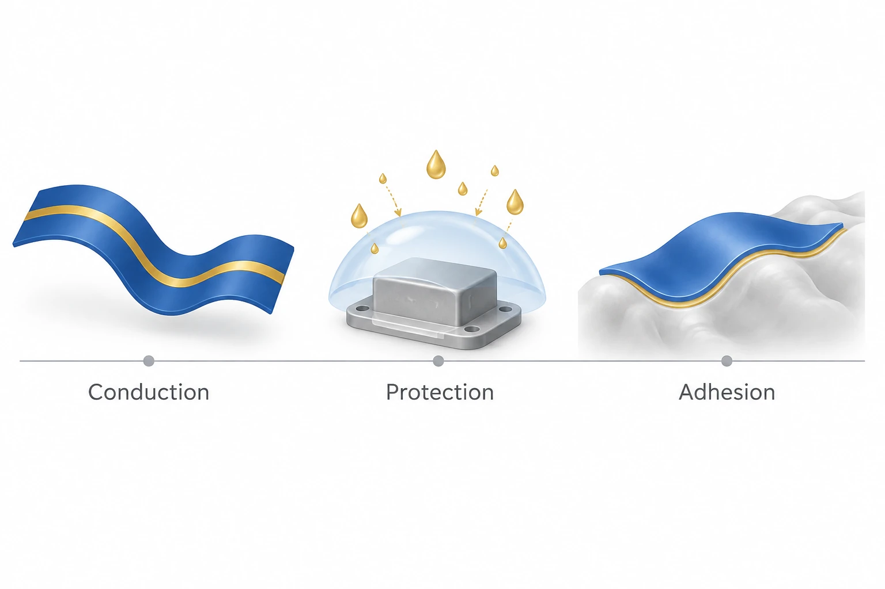

이 연구가 다루는 문제
액체 기반 재료가 바이오전자소자의 전도, 수분 차단, 조직 접착을 어떻게 맡을 수 있는지 정리한 종설입니다. 잘 늘어나는 전도체를 만드는 문제에서 나아가, 서로 다른 기능의 층과 부품을 함께 설계하는 방법과 한계를 살핍니다.
연구가 시작된 배경
변형 가능한 전도체는 바이오전자 기기의 한 부분입니다. 물로부터 기기를 보호하고 조직과 안정적으로 접촉하게 하는 기능도 필요합니다. 이 리뷰는 전도·봉지·접착을 함께 살펴보며 서로 다른 역할의 층이 하나의 기기에서 어떻게 연결되는지 설명합니다.
어떻게 접근했나요?
리뷰는 기계식 밀봉의 크기·강성과 고분자 막에 생길 수 있는 빈틈·균열을 비교한 뒤, 결함과 물의 침투 경로를 다루는 유연한 방법으로 윤활액 주입 계면을 소개합니다. 이는 액체를 넣으면 모든 재료가 같은 차단 성능을 갖는다는 뜻이 아니라, 재료와 기기별로 평가해야 하는 보호층 설계 전략입니다.

AI 생성 개념도입니다. 액체 기반 바이오전자 기기의 전도, 보호, 접착을 서로 다른 역할로 표현합니다. 형상과 색은 기능을 나타내며 하나의 실제 기기나 특정 재료를 뜻하지 않습니다.
리뷰의 관점을 정성적으로 정리한 그림입니다. 실제 적층·하우징 설계, 완전 방수 구조, 측정된 액체 차단 성능을 재현하지 않습니다.
논문 원그림을 복제한 이미지가 아니며, 원그림 재사용 허가를 의미하지 않습니다.
무엇을 어떻게 평가했나요?
조직과 탄성률이 비슷하다고 해서 접착이 확보되지는 않습니다. 수분 함량이 높고 강성이 낮으면 하이드로겔의 형태 유지가 어려울 수 있어, 가교와 조직 결합 부위를 함께 설계할 필요가 있습니다. 역학적 적합성, 계면 결합, 전도, 수분 차단은 각각 평가해야 합니다.
주요 결과
완전히 부드러운 시스템이 아직 모두 제공하지 못하는 기능과 안정성을 고체 부품이 담당합니다. 리뷰가 제시하는 과제는 이 부품들을 유연한 재료로 연결하면서 수분 노출과 역학적 불일치를 줄이는 것입니다. 모든 부분이 부드러운 시스템은 앞으로의 방향으로 제시됩니다.
아직 남아 있는 질문
표에 인용된 원연구를 확인하지 않고 재료나 기기의 수명을 순위화할 수는 없습니다. 최대 전도도와 변형률은 서로 다른 시편과 하중 이력에서 나온 값일 수 있습니다. 이 리뷰는 각 전략이 어느 층과 고장 원인을 다루는지 이해하는 데 도움이 됩니다.
함께 읽을 연구
3D printing of conducting polymers
DOI: 10.1038/s41467-020-15316-7 ↗
Yuk 등은 전도 구조와 절연체를 함께 인쇄하는 구체적인 사례를 제시합니다. 실제 기기를 통해 리뷰의 넓은 재료 범주를 이해할 수 있습니다.
하나의 PEDOT:PSS 기기 결과를 액체금속, 이온성 액체, 봉지 재료 전체의 성능으로 확대할 수는 없습니다.
본문을 참고한 설명RESEARCH NEWS
연구 소식
해설에 사용한 자료
이 해설은 논문 본문과 원그림을 참고합니다. 보충자료와 원자료의 별도 검토는 완료하지 않았습니다. 검토 논문에 인용된 개별 연구의 전문을 모두 읽은 것은 아닙니다.